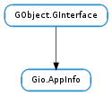

| Subclasses: | Gio.DesktopAppInfo |
|---|
| static | create_from_commandline(commandline, application_name, flags) |
| static | get_all() |
| static | get_all_for_type(content_type) |
| static | get_default_for_type(content_type, must_support_uris) |
| static | get_default_for_uri_scheme(uri_scheme) |
| static | get_fallback_for_type(content_type) |
| static | get_recommended_for_type(content_type) |
| static | launch_default_for_uri(uri, launch_context) |
| static | reset_type_associations(content_type) |
| add_supports_type(content_type) | |
| can_delete() | |
| can_remove_supports_type() | |
| delete() | |
| dup() | |
| equal(appinfo2) | |
| get_commandline() | |
| get_description() | |
| get_display_name() | |
| get_executable() | |
| get_icon() | |
| get_id() | |
| get_name() | |
| get_supported_types() | |
| launch(files, launch_context) | |
| launch_uris(uris, launch_context) | |
| remove_supports_type(content_type) | |
| set_as_default_for_extension(extension) | |
| set_as_default_for_type(content_type) | |
| set_as_last_used_for_type(content_type) | |
| should_show() | |
| supports_files() | |
| supports_uris() |
None
None
Bases: GObject.GInterface
Gio.AppInfo and Gio.AppLaunchContext are used for describing and launching applications installed on the system.
As of GLib 2.20, URIs will always be converted to POSIX paths (using Gio.File.get_path ()) when using Gio.AppInfo.launch () even if the application requested an URI and not a POSIX path. For example for an desktop-file based application with Exec key totem &percntU and a single URI, sftp://foo/file.avi, then /home/user/.gvfs/sftp on foo/file.avi will be passed. This will only work if a set of suitable GIO extensions (such as gvfs 2.26 compiled with FUSE support), is available and operational; if this is not the case, the URI will be passed unmodified to the application. Some URIs, such as mailto:, of course cannot be mapped to a POSIX path (in gvfs there’s no FUSE mount for it); such URIs will be passed unmodified to the application.
Specifically for gvfs 2.26 and later, the POSIX URI will be mapped back to the GIO URI in the Gio.File constructors (since gvfs implements the Gio.Vfs extension point). As such, if the application needs to examine the URI, it needs to use Gio.File.get_uri () or similar on Gio.File. In other words, an application cannot assume that the URI passed to e.g. Gio.File.new_for_commandline_arg () is equal to the result of Gio.File.get_uri (). The following snippet illustrates this:
GFile *f;
char *uri;
file = g_file_new_for_commandline_arg (uri_from_commandline);
uri = g_file_get_uri (file);
strcmp (uri, uri_from_commandline) == 0; // FALSE
g_free (uri);
if (g_file_has_uri_scheme (file, "cdda"))
{
// do something special with uri
}
g_object_unref (file);
This code will work when both cdda://sr0/Track 1.wav and /home/user/.gvfs/cdda on sr0/Track 1.wav is passed to the application. It should be noted that it’s generally not safe for applications to rely on the format of a particular URIs. Different launcher applications (e.g. file managers) may have different ideas of what a given URI means.
| Parameters: |
|
|---|---|
| Raises: | |
| Returns: | new Gio.AppInfo for given command. |
| Return type: |
Creates a new Gio.AppInfo from the given information.
Note that for commandline, the quoting rules of the Exec key of the freedesktop.org Desktop Entry Specification are applied. For example, if the commandline contains percent-encoded URIs, the percent-character must be doubled in order to prevent it from being swallowed by Exec key unquoting. See the specification for exact quoting rules.
| Returns: | a newly allocated GLib.List of references to Gio.AppInfo s. |
|---|---|
| Return type: | [Gio.AppInfo] |
Gets a list of all of the applications currently registered on this system.
For desktop files, this includes applications that have NoDisplay=true set or are excluded from display by means of OnlyShowIn or NotShowIn. See Gio.AppInfo.should_show (). The returned list does not include applications which have the Hidden key set.
| Parameters: | content_type (str) – the content type to find a Gio.AppInfo for |
|---|---|
| Returns: | GLib.List of Gio.AppInfos for given content_type or None on error. |
| Return type: | [Gio.AppInfo] |
Gets a list of all Gio.AppInfos for a given content type, including the recommended and fallback Gio.AppInfos. See Gio.AppInfo.get_recommended_for_type () and Gio.AppInfo.get_fallback_for_type ().
| Parameters: |
|
|---|---|
| Returns: | Gio.AppInfo for given content_type or None on error. |
| Return type: |
Gets the default Gio.AppInfo for a given content type.
| Parameters: | uri_scheme (str) – a string containing a URI scheme. |
|---|---|
| Returns: | Gio.AppInfo for given uri_scheme or None on error. |
| Return type: | Gio.AppInfo |
Gets the default application for handling URIs with the given URI scheme. A URI scheme is the initial part of the URI, up to but not including the ‘:’, e.g. “http”, “ftp” or “sip”.
| Parameters: | content_type (str) – the content type to find a Gio.AppInfo for |
|---|---|
| Returns: | GLib.List of Gio.AppInfos for given content_type or None on error. |
| Return type: | [Gio.AppInfo] |
Gets a list of fallback Gio.AppInfos for a given content type, i.e. those applications which claim to support the given content type by MIME type subclassing and not directly.
| Parameters: | content_type (str) – the content type to find a Gio.AppInfo for |
|---|---|
| Returns: | GLib.List of Gio.AppInfos for given content_type or None on error. |
| Return type: | [Gio.AppInfo] |
Gets a list of recommended Gio.AppInfos for a given content type, i.e. those applications which claim to support the given content type exactly, and not by MIME type subclassing. Note that the first application of the list is the last used one, i.e. the last one for which Gio.AppInfo.set_as_last_used_for_type () has been called.
| Parameters: |
|
|---|---|
| Raises: | |
| Returns: | |
| Return type: |
Utility function that launches the default application registered to handle the specified uri. Synchronous I/O is done on the uri to detect the type of the file if required.
| Parameters: | content_type (str) – a content type |
|---|
Removes all changes to the type associations done by Gio.AppInfo.set_as_default_for_type (), Gio.AppInfo.set_as_default_for_extension (), Gio.AppInfo.add_supports_type () or Gio.AppInfo.remove_supports_type ().
| Parameters: | content_type (str) – a string. |
|---|---|
| Raises: | GLib.GError |
| Returns: | True on success, False on error. |
| Return type: | bool |
Adds a content type to the application information to indicate the application is capable of opening files with the given content type.
| Returns: | True if appinfo can be deleted |
|---|---|
| Return type: | bool |
Obtains the information whether the Gio.AppInfo can be deleted. See Gio.AppInfo.delete ().
| Returns: | True if it is possible to remove supported content types from a given appinfo, False if not. |
|---|---|
| Return type: | bool |
Checks if a supported content type can be removed from an application.
| Returns: | True if appinfo has been deleted |
|---|---|
| Return type: | bool |
Tries to delete a Gio.AppInfo.
On some platforms, there may be a difference between user-defined Gio.AppInfo s which can be deleted, and system-wide ones which cannot. See Gio.AppInfo.can_delete ().
| Returns: | a duplicate of appinfo. |
|---|---|
| Return type: | Gio.AppInfo |
Creates a duplicate of a Gio.AppInfo.
| Parameters: | appinfo2 (Gio.AppInfo) – the second Gio.AppInfo. |
|---|---|
| Returns: | True if appinfo1 is equal to appinfo2. False otherwise. |
| Return type: | bool |
Checks if two Gio.AppInfo s are equal.
| Returns: | a string containing the appinfo ‘s commandline, or None if this information is not available |
|---|---|
| Return type: | str |
Gets the commandline with which the application will be started.
| Returns: | a string containing a description of the application appinfo, or None if none. |
|---|---|
| Return type: | str |
Gets a human-readable description of an installed application.
| Returns: | the display name of the application for appinfo, or the name if no display name is available. |
|---|---|
| Return type: | str |
Gets the display name of the application. The display name is often more descriptive to the user than the name itself.
| Returns: | a string containing the appinfo ‘s application binaries name |
|---|---|
| Return type: | str |
Gets the executable’s name for the installed application.
| Returns: | the default Gio.Icon for appinfo or None if there is no default icon. |
|---|---|
| Return type: | Gio.Icon |
Gets the icon for the application.
| Returns: | a string containing the application’s ID. |
|---|---|
| Return type: | str |
Gets the ID of an application. An id is a string that identifies the application. The exact format of the id is platform dependent. For instance, on Unix this is the desktop file id from the xdg menu specification.
Note that the returned ID may be None, depending on how the appinfo has been constructed.
| Returns: | the name of the application for appinfo. |
|---|---|
| Return type: | str |
Gets the installed name of the application.
| Returns: | a list of content types. |
|---|---|
| Return type: | [str] |
Retrieves the list of content types that app_info claims to support. If this information is not provided by the environment, this function will return None. This function does not take in consideration associations added with Gio.AppInfo.add_supports_type (), but only those exported directly by the application.
| Parameters: |
|
|---|---|
| Raises: | |
| Returns: | |
| Return type: |
Launches the application. Passes files to the launched application as arguments, using the optional launch_context to get information about the details of the launcher (like what screen it is on). On error, error will be set accordingly.
To launch the application without arguments pass a None files list.
Note that even if the launch is successful the application launched can fail to start if it runs into problems during startup. There is no way to detect this.
Some URIs can be changed when passed through a Gio.File (for instance unsupported URIs with strange formats like mailto:), so if you have a textual URI you want to pass in as argument, consider using Gio.AppInfo.launch_uris () instead.
The launched application inherits the environment of the launching process, but it can be modified with Gio.AppLaunchContext.setenv () and Gio.AppLaunchContext.unsetenv ().
On UNIX, this function sets the GIO_LAUNCHED_DESKTOP_FILE environment variable with the path of the launched desktop file and GIO_LAUNCHED_DESKTOP_FILE_PID to the process id of the launched process. This can be used to ignore GIO_LAUNCHED_DESKTOP_FILE, should it be inherited by further processes. The DISPLAY and DESKTOP_STARTUP_ID environment variables are also set, based on information provided in launch_context.
| Parameters: |
|
|---|---|
| Raises: | |
| Returns: | |
| Return type: |
Launches the application. This passes the uris to the launched application as arguments, using the optional launch_context to get information about the details of the launcher (like what screen it is on). On error, error will be set accordingly.
To launch the application without arguments pass a None uris list.
Note that even if the launch is successful the application launched can fail to start if it runs into problems during startup. There is no way to detect this.
| Parameters: | content_type (str) – a string. |
|---|---|
| Raises: | GLib.GError |
| Returns: | True on success, False on error. |
| Return type: | bool |
Removes a supported type from an application, if possible.
| Parameters: | extension (str) – a string containing the file extension (without the dot). |
|---|---|
| Raises: | GLib.GError |
| Returns: | True on success, False on error. |
| Return type: | bool |
Sets the application as the default handler for the given file extension.
| Parameters: | content_type (str) – the content type. |
|---|---|
| Raises: | GLib.GError |
| Returns: | True on success, False on error. |
| Return type: | bool |
Sets the application as the default handler for a given type.
| Parameters: | content_type (str) – the content type. |
|---|---|
| Raises: | GLib.GError |
| Returns: | True on success, False on error. |
| Return type: | bool |
Sets the application as the last used application for a given type. This will make the application appear as first in the list returned by Gio.AppInfo.get_recommended_for_type (), regardless of the default application for that content type.
| Returns: | True if the appinfo should be shown, False otherwise. |
|---|---|
| Return type: | bool |
Checks if the application info should be shown in menus that list available applications.